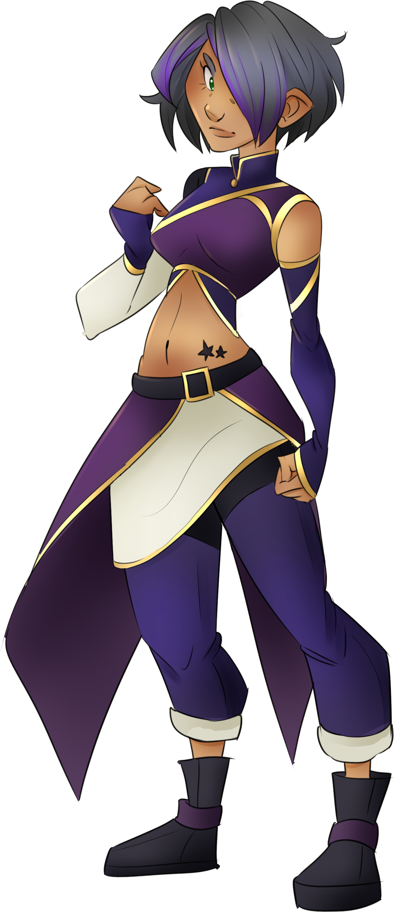
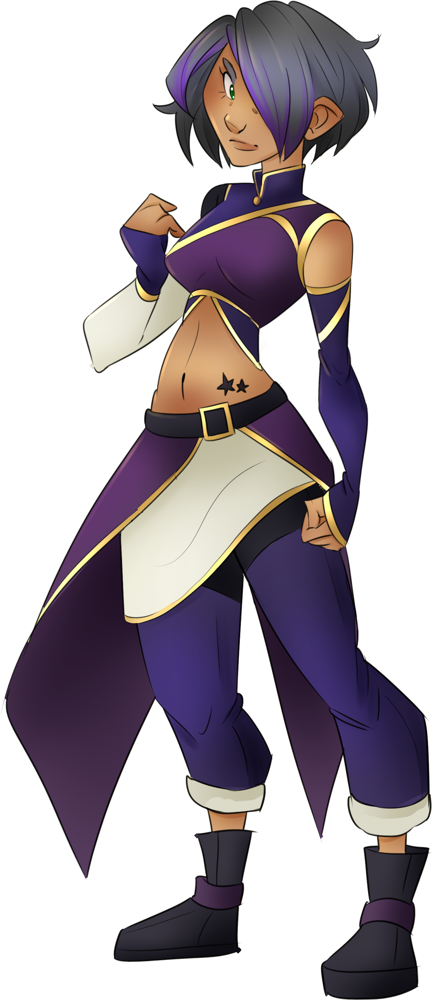

Kali Dana
name: Kali Dana
age: 14
date of birth: 10/26
hair color: dark grey with dark violet at the ends
hair style: shoulder length bob cut with no bangs, swept over left eye
skin tone: medium light brown
eye color: dark lime green
height: 5 ft 6.73 in
ethnicity/race: Indian descended
citizenship: The Tribal Lands of Vagor
key attribute: serious
right-handed
body type: curvyish
Character Bio/Personality:
Kali is somewhat serious, but more worried than anything else. She's very concerned for the safety of her younger twin, Pyara.
Kali and Pyara were orphaned at a young age and grew up on the streets before being discovered and saved by Lovely Hearts team.